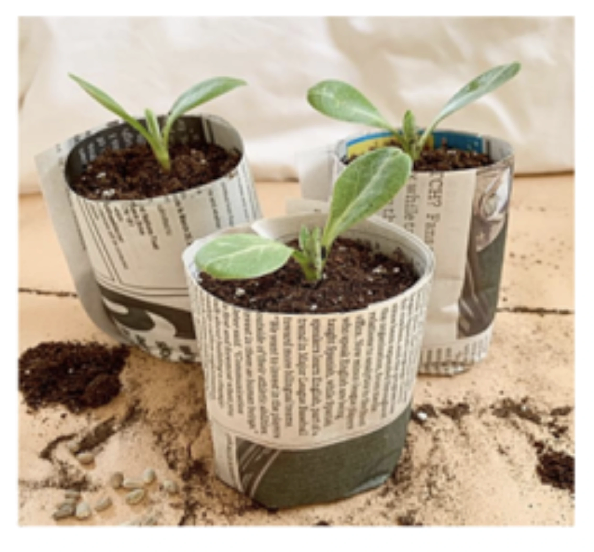
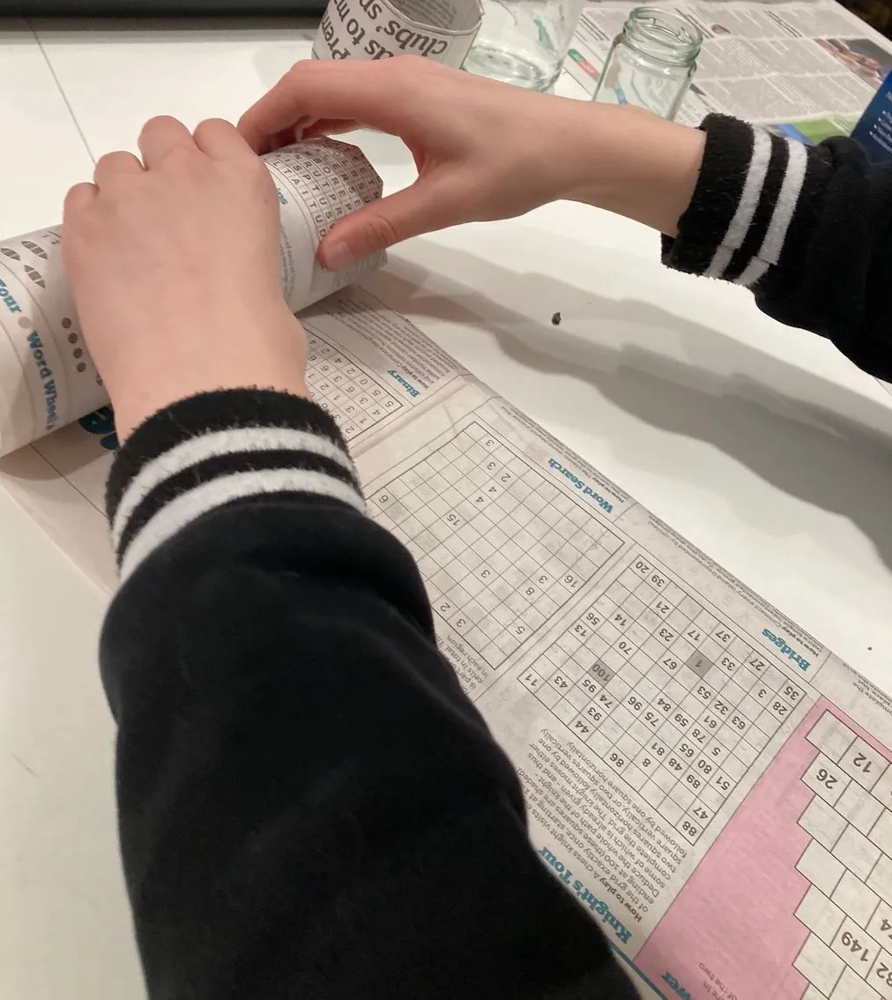
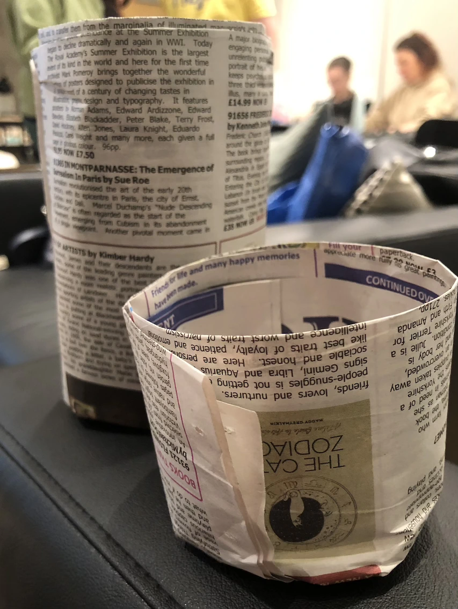
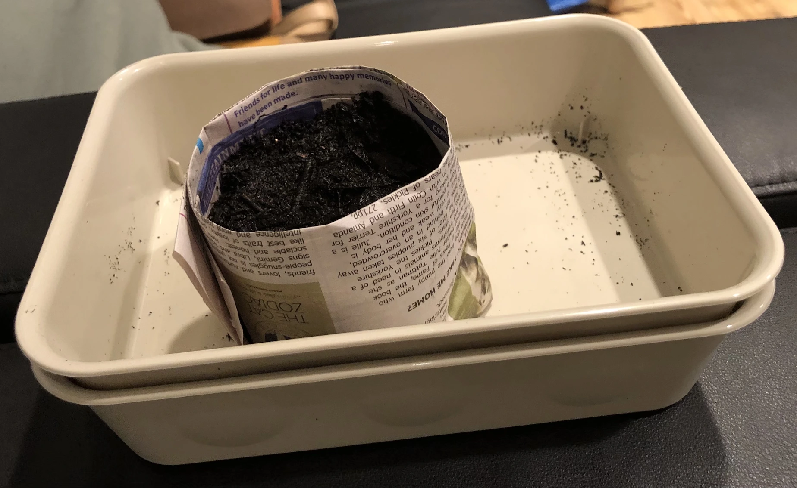
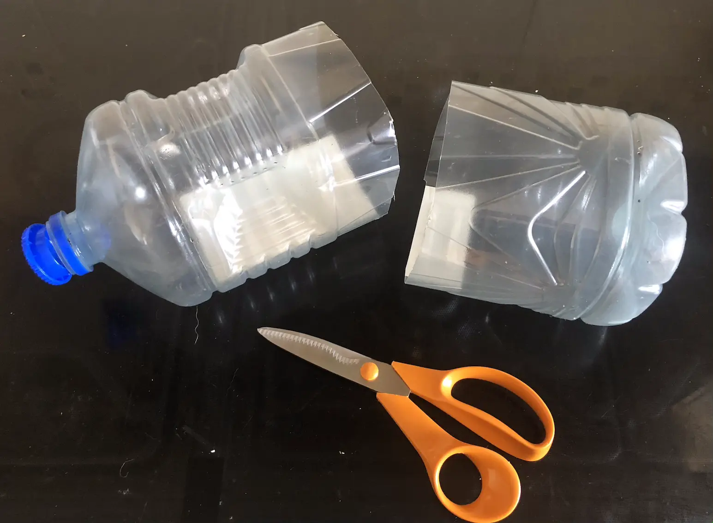
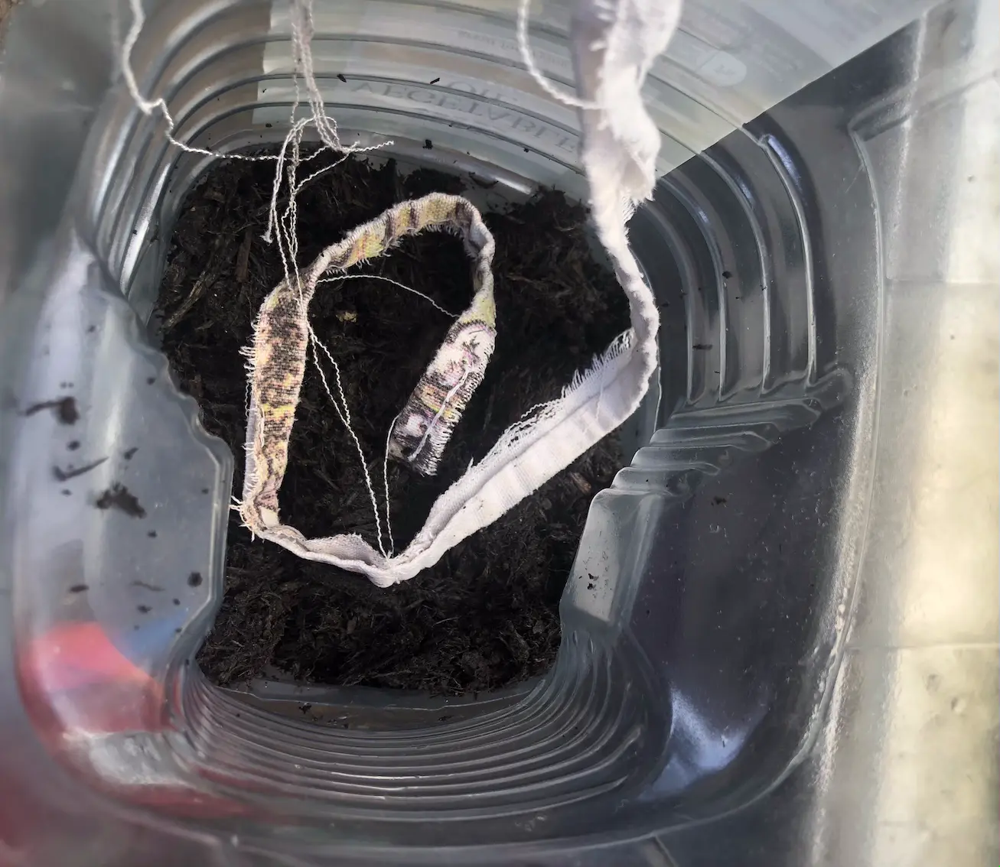
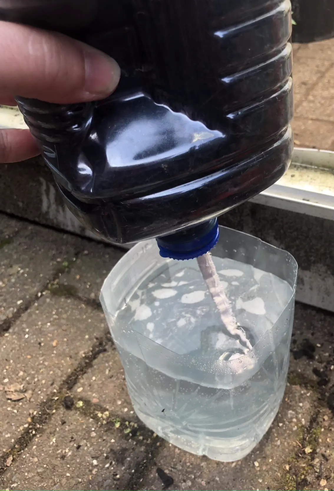
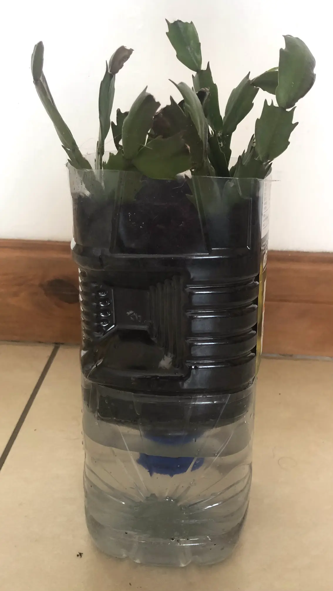

Making Paper Plant Pots
Sometimes you just don't have enough plant pots for all the seeds you want to grow. You could buy more, but there are alternatives. Ikea's Live Lagom Get Growing workshop showed us how to make pots using a sheet of newspaper and a glass jar.
Lay the sheet of newspaper flat and fold it lengthwise twice to form a long narrow strip.
Place the jar on the newspaper strip, with about half of the strip overlapping the open end of the jar. Then roll the paper around the jar.
You'll find this easier if you choose a cylindrical jar. One that is shaped can make it tricky to extricate the jar from the rolled newspaper.
Push the ends of the paper into the open end of the jar then remove the jar from the paper.
Push the jar into the paper pocket to squash the folds flat and seal the bottom of your pot. Once the jar is removed, the pot is ready for use.
In the workshop, we filled them with compost and chose from a selection of seeds we'd brought to swap. Hopefully I'll have a pumpkin sprouting before too long.
Making a Self-watering Planter
This is easy to make and reuses a plastic bottle.
Just cut the bottle in half and set the top half upside down in the lower half of the bottle. The top half will be used to grow your plant while the bottle half will comprise the water reservoir.
Cut a strip of cloth (cotton is recommended) or length of string and feed it through the bottle until it touches the bottom of the base. This will act as a wick to transfer water from the base into the compost above.
Place a small piece of newspaper or fabric over the hole in the top half of the bottle to prevent the compost falling through. Or you can use the lid of the bottle if you make a hole in it that allows the wick to fit through.
Holding the cloth upright, carefully add some compost to the planter. Curl the remaining cloth into a circle around the planter and cover in in compost. Buiuld up layers of compost and coiled fabric.
Fill the base with water and add your seeds or plant to the compost.
Given I should be able to see any roots through the clear plastic, I'm using my planter to try to grow some cuttings. It'll be easier to tell whether I've been successful in creating new plants.
